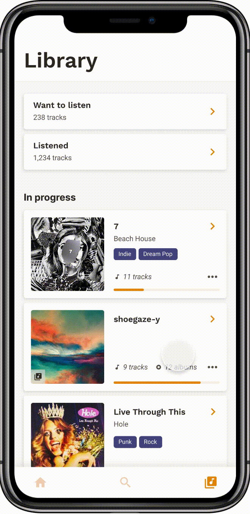

Catalog new music
If you find something new that you're interested in, save the track into your 'Want to listen' catalog for later. Save the piece into a collection with other new music.

Rediscover new music that you previously saved
Search and filter directly from new music to disover saved music that fits the your mood or interested genres.

Track listening progress on collections and albums
Motivate yourself to listen through the collections and albums in your 'Want to listen' catalog with help from a visual representation of your progress.
